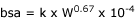

Dose schedules
If you know the target plasma concentration and the volume of distribution you can work out what the dose should be by multiplying the two (assuming 100% bioavailability). Obviously this does not take into consideration the elimination of the drug, so you need to know what the upper and lower limits on plasma concentration are to work out the dose schedule. You also need to know the half life of the drug. In clinical practice, these figures are not often known, and even if they are, you have to make the large assumption that the individual animal you are treating is the same as the animals in the literature. Disease will alter pharmacokinetics!
Very toxic drugs, eg anticancer drugs, are often given on body surface area rather than weight. This is because body surface area corresponds better with metabolic activity than weight. Small animals need relatively more than big animals. Body surface area (m2) is given by:

where W is weight in g, k = 10.1 in dogs and 10 in cats.
| 3 Pharmacokinetics index |
| |
copyright
Massey University
|